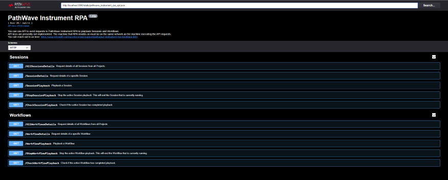

RPA API Calling
With the PathWave Instrument RPA API, you can send requests and interact with your Sessions and Workflows. This enables you to automate your testing process even further and seamlessly integrate RPA into your own Workflows.
In this section, we will introduce how to use the API to run our RPA software product. The API documentation can be found at http://localhost:3950/api-docs#/. From this documentation, you can access various HTTP GET methods.
Localhost and Port number
Localhost is a hostname that refers to the current device used to access it. In the context of our RPA API, it implies that the API is running on the same machine as your RPA software. This allows you to access the API server directly from your device without having to rely on external servers or networks.
To access the API on localhost, simply open a web browser and enter the provided URL, such as http://localhost:3950/api-docs#/. If the API server is running correctly, you should see the API documentation page.
The number "3950" in the example URL (http://localhost:3950/api-docs#/) represents the port number on which the API server is running.
In our case, the API server listens to port 3950 for incoming requests. This means that when you access the API through the provided URL, your RPA software knows to send its requests to port 3950.
Accessing the API
To access the API, simply enter the appropriate HTTP GET method in your browser or through a tool like Postman or curl. For example, to start a Session playback, use the following URL format:
URL Example:
http://localhost:6110/api/v1/SessionPlayback?projectname=Project%20Demo&connectionname=Temperature%20Chamber&sessionname=Session1
Replace "Project Demo", "Temperature Chamber", and "Session1" with the respective project name, connection name, and session name you want to execute.
By accessing the API through the provided methods, you can control and monitor your RPA software remotely, integrate it with other software systems, or even create custom front-end interfaces for your users.
RPA reference documentation
To access the PathWave Instrument RPA API Reference documentation, you can directtly go to url: "http://localhost:3950/api-docs#/". Another way to open RPA reference documentation is by clicking the Information and Technical Support icon located in the top right corner of the RPA interface. From there, select the API Reference option to open the API Calling documentation. This documentation provides detailed information on the API methods and parameters you can use to interact with your RPA Sessions and Workflows programmatically.
To access the details of an API method, click the corresponding GET method in the API Reference documentation. From there, click Try it out button to view the necessary parameters required to complete the method. Some methods may not require parameters.

API Reference documentation in RPA
For example, to play back a Session, enter the required parameters (Project Name, Connection Name, Session Name) and then click Execute.
An example of executing the API method
After executing the API method, a property list is returned, including the following information:
-
Curl: The command line syntax used to execute the API method.
-
Request URL: The URL of the API endpoint used for the method.
-
Response Body: The JSON object returned by the method. The response body contains the data returned by the method, including any errors or warnings.
-
Response Headers: The HTTP headers included in the response. The response headers provide information about the response, such as the content type and length.

The response after executing the API method